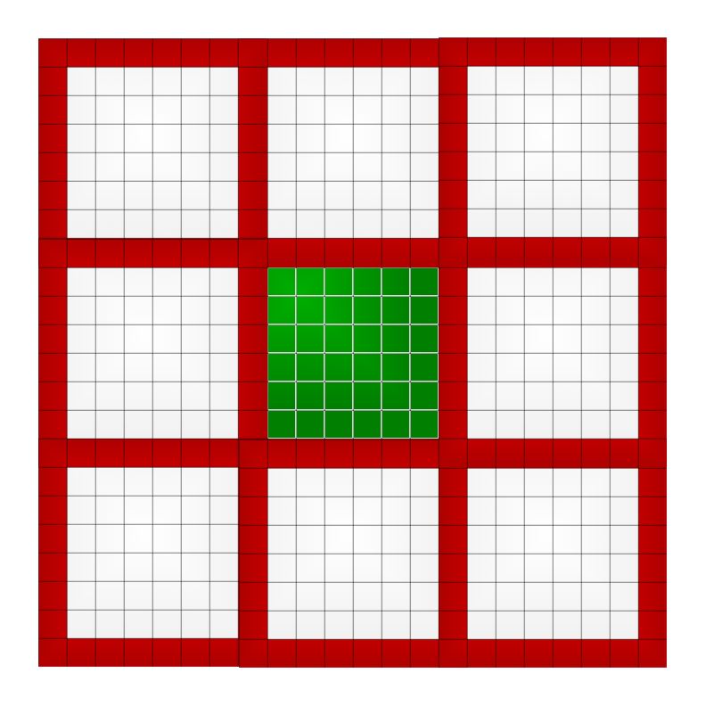
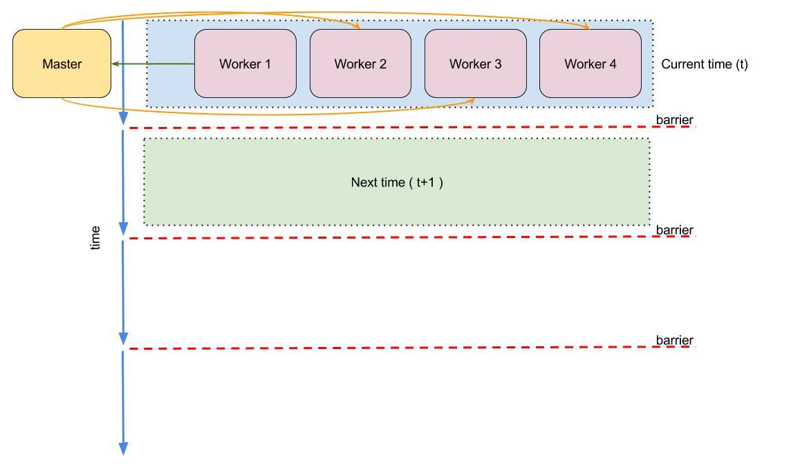
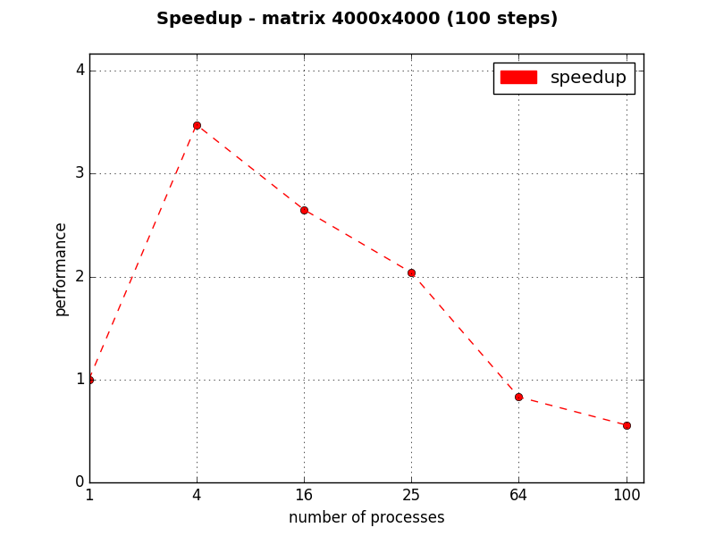
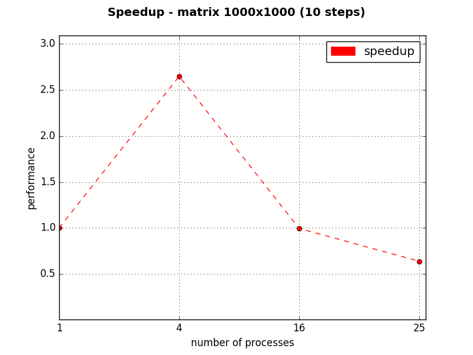

Simulazione
Progetto gestione dei serventi in parallelo
Creato da Gabriele Di Bari / Mirco Tracolli
Descrizione
Il progetto riguarda l'implementazione del Gioco della vita con divisione della griglia in sotto griglie processate da più lavoratori.
Implementation
Abbiamo scelto un'implementazione di tipo master/slave, dove il master cordina i vari lavoratori (slave) con l'ausilio di messaggi.
Griglia locale

Ogni lavoratore ha la propria griglia ed un bordo, che rappresenta il confine.
Griglia globale

Ogni lavoratore ha al più 8 vicini.
Griglia circolare

La griglia (se abilitata la modalità circolare) la si può rappresentare come un toroide.
Linea del tempo

Risultati
Il ritulato, per ogni lavoratore, viene memorizzato in una cartelle al cui interno vengono scritti tutti gli stati della simulazione.
Visualizzatore
Per capire, umanamente, il risultato della compuazione si è scritto un visualizzatore che usa l'ambiente NW.js.
Conclusioni
La simulazione parallela guadagna in performance se il numero di processi non è molto alto. Con l'aumento del numero di lavoratori le comunicazioni tra essi diminuiscono drasticamente la velocità della simulazione.
Conclusions
1 Pc versione C++.
Conclusions
2 Pc versione C++, comunicazione via rete.
Conclusions

Risultati con una matrice non random e poco poolata.
Conclusions

Risultati con matrice random.
FINE
- README per maggiori informazioni,
- Game of Life Parallel Simulation per la versione C++.